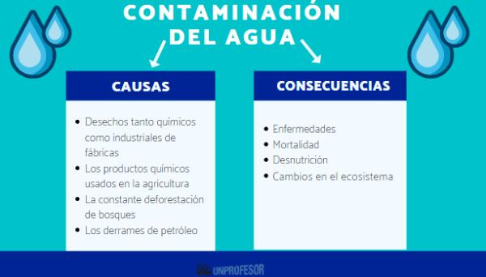

Causas de la Contaminación
- Cuando ocurren accidentes con barcos petroleros o instalaciones, el petróleo se derrama y contamina grandes áreas marinas, afectando a miles de especies.
- Residuos industriales
- Derrames de petróleo
- Fertilizantes y pesticidas agrícolas
- Basura doméstica y plásticos
